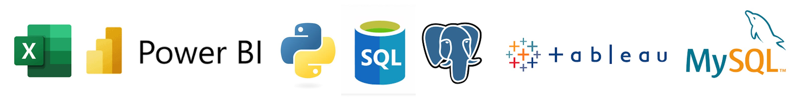

Port
fólio
Home
Sobre mim
Formação
Portfólio
Contato
Formação e Certificações
Graduação Ciência de Dados - UNINTER
Data Analytics - Preditiva Analytics
Power BI para Análise de Dados - Preditiva Analytics
Fundamentos de Analytics - Preditiva Analytics
Excel para Análise de Dados - Preditiva Analytics
Imersão Inteligência Artificial - Alura
Ferramentas e Linguagens

PostgreSQL
MySQL | SQLserver
Excel
Power BI
Tableau
SQL
DAX
Python
Competências Técnicas
Limpeza e Preparação de Dados
Análise Exploratória de Dados (EDA)
Modelagem Preditiva
Visualização de Dados